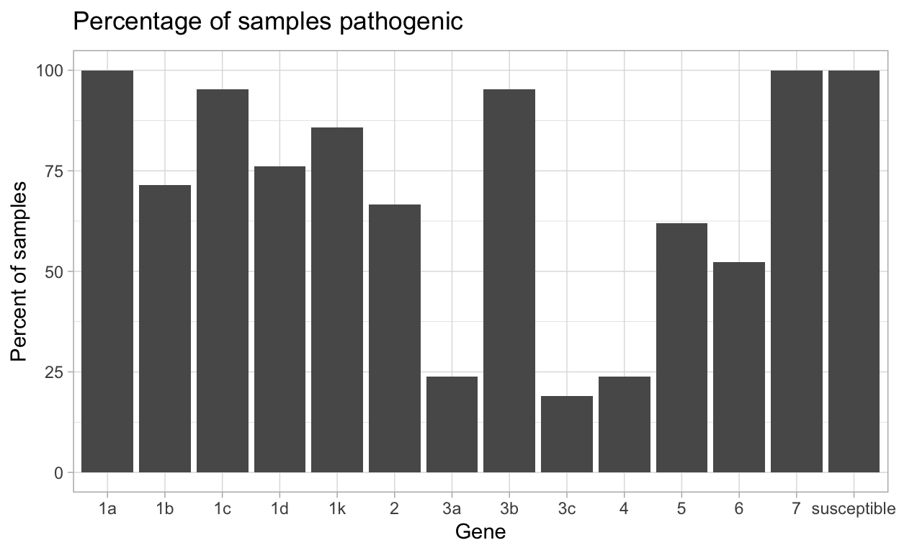

Background
Pathogens can, and have been observed to, overcome deployed genetic resistance in many crops. Adaptation of pathogen populations to genetic resistance is an ongoing “arms race” between the pathogen and pathologists to deploy effective resistance genes before the pathogen population can adapt and overcome them. Identifying where and when these adaptations occur in a growing area is pivotal to successful management of disease.
Performing pathogen virulence surveys, as is done for Phytophthora sojae on soybean, is critical for identifying effective resistance genes to a pathogen population. In the case of P. sojae, resistance genes (Rps in this example) have been shown to be effective for 8-20 years, depending on gene deployed and location. Regular surveys are therefore conducted to sample and identify effective Rps genes in the sampled population.
In previous P. sojae surveys Excel spreadsheets, commonly the Habgood-Gilmour Spreadsheet, “HaGiS” Excel spread sheet, were used to perform calculation on distribution of susceptible reactions, pathotype complexity, pathotype frequency, as well as alpha diversity indices. This limited the analyses that could be performed to compare between different sampled populations virulence to identify trends in effective resistance genes, i.e., beta-diversity. Using these Excel sheets makes it difficult to not only compare between fields, states or countries pathogen virulence, but also makes reproducibility of these analyses very difficult if not impossible.
While {hagis} was made and validated using Phytophthora sojae virulence data, this package can be used with any pathosystem where plant resistance is conferred in a gene-for-gene fashion.
How did {hagis} come to be?
I (Austin McCoy) started my PhD in 2017 with absolutely no experience in R or RStudio, and started performing a pathotype (virulence) survey of Phytophthora sojae in Michigan to identify effective resistance genes to manage P. sojae in the state. At the time the HaGiS Excel sheet was the primary way research groups were analyzing their P. sojae virulence data, however, it was cumbersome and error prone with few ways to look at the large amounts of data we were generating. By 2019 I had produced quite a bit of isolate virulence data and had started using R, mainly for visualizing other experimental data and performing statistical analysis, while still trying to use the HaGiS Excel sheet. Thankfully another PhD student at the time, Dr. Zachary Noel, brought up the idea of me performing the HaGiS analyses in R.
This R package originally started out as easy to navigate and use R scripts in a .R file. It wasn’t until we got in touch with the Open Plant Pathology group that making these scripts into an R package became a reality. It wasn’t long after that the {hagis} R package was available on GitHub and then CRAN.
How is this package being used?
{hagis} is still a very new package, being released in October 2019. This package is useful to plant pathologists working on pathogen gene-for-gene virulence data identifying effective resistance genes in their respective pathosystems. It provides all analyses that have been used historically to identify effective resistance genes (pathotype complexity, pathotype distribution, individual isolate pathotypes, etc.) but now also has the ability to compare between two, or more, sampled populations to identify differences in resistance gene efficacy (using Principal Coordinates Analysis (PCoA), Permutation based analysis of Variance (PERMANOVA), beta-dispersion and Analysis of Similarities (ANOSIM)).
Currently, as of July 21st, 2021, {hagis} has been downloaded 10,664 times. Research groups from many states in the United States, as well as South America have published using this package in their own pathogen virulence surveys. The majority of these studies have been with P. sojae, but there has also been some use in other pathosystems, such as frog-eye leaf spot in soybean caused by Cercospora sojina. We are excited to see how this package is used going forward!
What is next?
We plan to keep maintaining the {hagis} package as is, but are open to recommendations from users and researchers on future expansions. Currently we are using the package to investigate trends in Rps gene efficacy on a global scale, mining data from previously published P. sojae pathotype surveys.
Where do I get the package and more information?
{hagis} can be downloaded from CRAN and when changes are made a development version can be downloaded on GitHub.
CRAN: https://cran.r-project.org/web/packages/hagis/index.html
GitHub: https://github.com/openplantpathology/hagis
Package documentation:
https://cran.r-project.org/web/packages/hagis/vignettes/hagis.html
https://cran.r-project.org/web/packages/hagis/vignettes/betadiversity.html
Authors
Austin McCoy
Zachary Noel
Adam Sparks
Martin Chilvers
Examples
{hagis} has a built in data set of 21 P. sojae isolates virulence data from Michigan. We will identify effective resistance genes tested, the average pathotype complexity of the data set, individual isolates pathotypes and the distribution of pathotype complexities using this practice data set below.
First lets load the {hagis} package and look at the built-in data set P_sojae_survey that comes with the package using head().
Isolate Line Rps Total HR (1) Lesion (2)
1: 1 Williams susceptible 10 0 0
2: 1 Harlon Rps 1a 10 4 0
3: 1 Harosoy 13xx Rps 1b 8 0 0
4: 1 L75-3735 Rps 1c 10 10 0
5: 1 PI 103091 Rps 1d 9 2 0
6: 1 Williams 82 Rps 1k 10 0 0
Lesion to cotyledon (3) Dead (4) total.susc total.resis perc.susc
1: 0 10 10 0 100
2: 0 6 6 4 60
3: 0 8 8 0 100
4: 0 0 0 10 0
5: 1 6 7 2 78
6: 0 10 10 0 100
perc.resis
1: 0
2: 40
3: 0
4: 100
5: 22
6: 0Let’s remove the prepended “Rps” in the gene column so that it will be easier to plot results.
To do this we will use gsub() to identify the pattern “Rps” and remove it pattern = 'Rps', replacement = "".
Isolate Line Rps Total HR (1) Lesion (2)
1: 1 Williams susceptible 10 0 0
2: 1 Harlon 1a 10 4 0
3: 1 Harosoy 13xx 1b 8 0 0
4: 1 L75-3735 1c 10 10 0
5: 1 PI 103091 1d 9 2 0
6: 1 Williams 82 1k 10 0 0
Lesion to cotyledon (3) Dead (4) total.susc total.resis perc.susc
1: 0 10 10 0 100
2: 0 6 6 4 60
3: 0 8 8 0 100
4: 0 0 0 10 0
5: 1 6 7 2 78
6: 0 10 10 0 100
perc.resis
1: 0
2: 40
3: 0
4: 100
5: 22
6: 0Now that we know the data set has loaded correctly and extra information in columns removed, let set up the central argument for {hagis} to run on.
To do this we can make the argument a list() to be used with all functions in {hagis}, named hagis_args. x = denotes the data set you want to use, in this example we will use the practice data set P_sojae_survey. cutoff = sets the cutoff for susceptible reactions.
For example a value of cutoff = 60 indicates that any isolate-plant interaction that results in 60% or more of a susceptible phenotype will be considered susceptible for analyses.
sample = indicates the column in your data set in which the Isolate identifier is contained (i.e., unique isolate identifier), in this case we will use Isolate.
gene = Rps identifies the column in which the genes tested are contained, in the practice data that column is named Rps.
The final argument, perc_susc = refers to the column in which your calculated percent susceptible reactions for each isolate-gene interaction is contained.
Users can change the cutoff value for their individual analysis needs.
Determining effective resistance genes
We can use the summarize_gene() function in {hagis} to identify which resistance genes tested were effective at managing the tested population. Using pander() we can make the table output much more visually appealing to readers.
| gene | N_virulent_isolates | percent_pathogenic |
|---|---|---|
| susceptible | 21 | 100 |
| 1a | 21 | 100 |
| 1b | 15 | 71.43 |
| 1c | 20 | 95.24 |
| 1d | 16 | 76.19 |
| 1k | 18 | 85.71 |
| 2 | 14 | 66.67 |
| 3a | 5 | 23.81 |
| 3b | 20 | 95.24 |
| 3c | 4 | 19.05 |
| 4 | 5 | 23.81 |
| 5 | 13 | 61.9 |
| 6 | 11 | 52.38 |
| 7 | 21 | 100 |
This data can then be made into a plot by using autoplot().

Individual isolates virulence formula
If you are interested in identifying a certain isolates virulence formula (referred to as “pathotype” with P. sojae), you can also do that using the functions calculate_diversities() and individual_pathotypes().
calculate_complexities() will also calculate multiple diversity indices from the virulence data.
Sample refers to the unique isolate identifier that you gave each isolate prior to analysis.
A table will be output that contains all isolates pathotype, regardless of if they are unique or not within your study.
| Simple | Gleason | Shannon | Simpson | Evenness |
|---|---|---|---|---|
| 0.9048 | 5.912 | 2.912 | 0.9433 | 0.9892 |
| Sample | Pathotype |
|---|---|
| 1 | 1a, 1b, 1d, 1k, 2, 3a, 3b, 5, 6, 7 |
| 10 | 1a, 1c, 3b, 5, 7 |
| 11 | 1a, 1c, 3b, 5, 6, 7 |
| 12 | 1a, 1b, 1c, 1d, 1k, 2, 6, 7 |
| 13 | 1a, 1b, 1c, 1d, 1k, 3b, 7 |
| 14 | 1a, 1b, 1c, 1k, 3b, 5, 6, 7 |
| 15 | 1a, 1b, 1c, 1d, 1k, 2, 3b, 4, 5, 6, 7 |
| 16 | 1a, 1b, 1c, 1k, 3b, 5, 7 |
| 17 | 1a, 1b, 1c, 1d, 1k, 2, 3b, 4, 5, 7 |
| 18 | 1a, 1b, 1c, 1d, 1k, 3a, 3b, 5, 6, 7 |
| 19 | 1a, 1b, 1c, 1d, 1k, 2, 3a, 3b, 3c, 6, 7 |
| 2 | 1a, 1b, 1c, 1k, 2, 3b, 3c, 4, 6, 7 |
| 20 | 1a, 1b, 1c, 1d, 1k, 2, 3a, 3b, 3c, 5, 7 |
| 21 | 1a, 1b, 1c, 1d, 1k, 2, 3a, 3b, 3c, 4, 5, 6, 7 |
| 3 | 1a, 1b, 1c, 1d, 1k, 2, 3b, 4, 6, 7 |
| 4 | 1a, 1c, 1d, 1k, 2, 3b, 5, 7 |
| 5 | 1a, 1c, 1d, 1k, 2, 3b, 6, 7 |
| 6 | 1a, 1c, 1d, 1k, 2, 3b, 5, 7 |
| 7 | 1a, 1b, 1c, 1d, 1k, 2, 3b, 7 |
| 8 | 1a, 1b, 1c, 1d, 1k, 2, 3b, 7 |
| 9 | 1a, 1c, 1d, 3b, 5, 7 |
Virulence complexity
Complexity of isolates virulence, or the number of resistance genes and isolate can overcome, is an important measure to track trends in pathogen virulence.
{hagis} can provide individual isolate complexities as well as a summary of complexities for the study using the calculate_complexities function.
Grouped Complexities
complexity frequency distribution
1: 1 0 0
2: 2 0 0
3: 3 0 0
4: 4 0 0
5: 5 1 1
6: 6 2 2
7: 7 2 2
8: 8 7 7
9: 9 0 0
10: 10 5 5
11: 11 3 3
12: 12 0 0
13: 13 1 1
Individual Complexities
sample N_samp
1: 1 10
2: 2 10
3: 3 10
4: 4 8
5: 5 8
6: 6 8
7: 7 8
8: 8 8
9: 9 6
10: 10 5
11: 11 6
12: 12 8
13: 13 7
14: 14 8
15: 15 11
16: 16 7
17: 17 10
18: 18 10
19: 19 11
20: 20 11
21: 21 13
sample N_sampUsing summary() will return the mean, standard error of the mean and standard deviation in a table.
| Mean | SD | SE |
|---|---|---|
| 8.714 | 2.004 | 0.4372 |
This complexity data can also be plotted as percentage of isolates per complexity, or the number of samples per pathotype complexity


Further examples and documentation can be found on the {hagis} documentation website, https://openplantpathology.github.io/hagis/. If you are using {hagis}, please get in touch. You can share it in the Open Plant Pathology Slack Workgroup or drop us an e-mail, OpenPlantPathology@gmail.com, we’d love to hear about it!